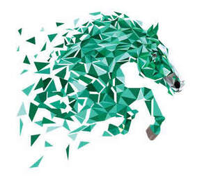

Trade Mark Journal No.2025/046 14 November 2025
UK00004289841 5 November 2025 (9,18,25,35,41,44)

- Class 9
- Riding helmets; riding hats; safety headwear; safety headgear; safety goggles; high-visibility safety clothing; safety clothing for protection against accident or injury; safety footwear for protection against accident or injury; reflective apparel and clothing for the prevention of accidents; reflective articles for wear, for the prevention of accidents; protective and safety equipment; protection devices for personal use against accidents; safety signs [luminous]; reflecting discs for wear, for the prevention of traffic accidents; downloadable computer software applications for accessing information, and making and managing bookings, entries, financial payments and transactions in the field of equestrian, sporting, entertainment and cultural events, facilities, activities and competitions; computer software, recorded and/or downloadable for accessing information, and making and managing bookings, entries, financial payments and transactions in the field of equestrian, sporting, entertainment and cultural events, facilities, activities and competitions; downloadable computer software applications for accessing information, and making and managing bookings, financial payments and transactions in the field of travel tours, tourism, travel activities, travel arrangement, excursions, outdoor activity excursions, adventure and cultural tours; computer software, recorded and/or downloadable for accessing information, and making and managing bookings, financial payments and transactions in the field of travel tours, tourism, travel activities, travel arrangement, excursions, outdoor activity excursions, adventure and cultural tours; software for streaming audiovisual and multimedia content; downloadable sound and image files; electronic publications downloadable; downloadable computer software applications allowing users to view and download equestrian, sporting and recreational event listings, entries, results, time records, photographs, and audio-visual recordings; mobile applications for booking tickets for equestrian, sporting, entertainment and cultural events and activities.
- Class 18
- Riding saddles; riding crops; riding sticks; riding whips; cushion padding made for saddlery; saddlery; padding for saddlery; saddlery of leather; harness; horse blankets; all weather blankets for animals; horse blankets for inside use.
- Class 25
- Clothing for horse-riding [other than riding hats]; equestrian articles of apparel [other than riding helmets]; riding apparel; breeches; jodhpurs; riding boots; riding shoes; chaps; riding gloves; jodhpur jackets; riding coats; shirts; weatherproof clothing; waterproof outerclothing; waterproof clothing; waterproof jackets; waterproof pants; overtrousers; rainwear; wind resistant jackets; windcheaters; thermal clothing; fleeces; clothing; footwear; headwear; gloves; tee shirts; sweatshirts; hooded sweatshirts; coats; jackets; pants; trousers; pullovers; jumpers; underwear; tracksuits; rain coats; sports jackets; sport coats; work boots; wellington boots.
- Class 35
- Organisation and holding of equine auctions; auction services; business advisory services; retail services of saddlery and harness; retail of clothing, footwear and headgear; retail of equine, equestrianism and horsecare articles; wholesale services of saddlery and harness; wholesale of equine, equestrianism and horsecare articles; advisory and development services relating to equestrian sports; marketing, advertising, public relations services; promotion and marketing the goods and services of others via electronic communications networks rental of advertising time on communication media; dissemination of advertising matter; publication of publicity texts; promotional event management; arranging and conducting of promotional events; sales promotion; compilation of data in computer databases; updating and maintenance of data in computer databases; systemisation of data into computer databases.
- Class 41
- Providing riding lessons; operation of riding schools; operation of riding facilities; operation of riding camps; organisation of equestrian meetings; rental of equestrian facilities; organisation of equestrian competitions; recreational equestrian services; training courses relating to promotion of clients and their horses; animal training services; consultancy services relating to the organisation of sporting events; arranging, conducting and organising sporting, entertainment and cultural events and activities; organisation of sports competitions; organising of recreational events; entertainment, sporting and cultural activities; special event planning; provision of listings and information in relation to sporting, cultural and entertainment events and activities; provision of information (including booking information) and reservation services electronically, via online computer networks and the internet and/or provided online from a computer database, including via links to websites of others, in the field of equestrian, sporting, entertainment and cultural events, facilities, activities and competitions; sports information services; provision of entertainment information; entertainment booking services; booking of sports events; booking of equestrian events; sporting booking services; ticket agency services (sporting, cultural and entertainment events and activities); multimedia publishing; publication of texts, other than publicity texts; electronic desktop publishing; providing on-line sound and image files, non-downloadable; writing and publication of texts other than publicity texts; production of podcast, webcast, radio and television programs.
- Class 44
- Services provided by a riding stable; breeding of thoroughbred horses; breeding of pedigree horses; breeding and mating services; grooming of horses; animal grooming services, equine semen bank services; equine breeding and mating services; equine semen collection services.
Ballywalter Stables Limited
Representative: Michael Fitzsimons